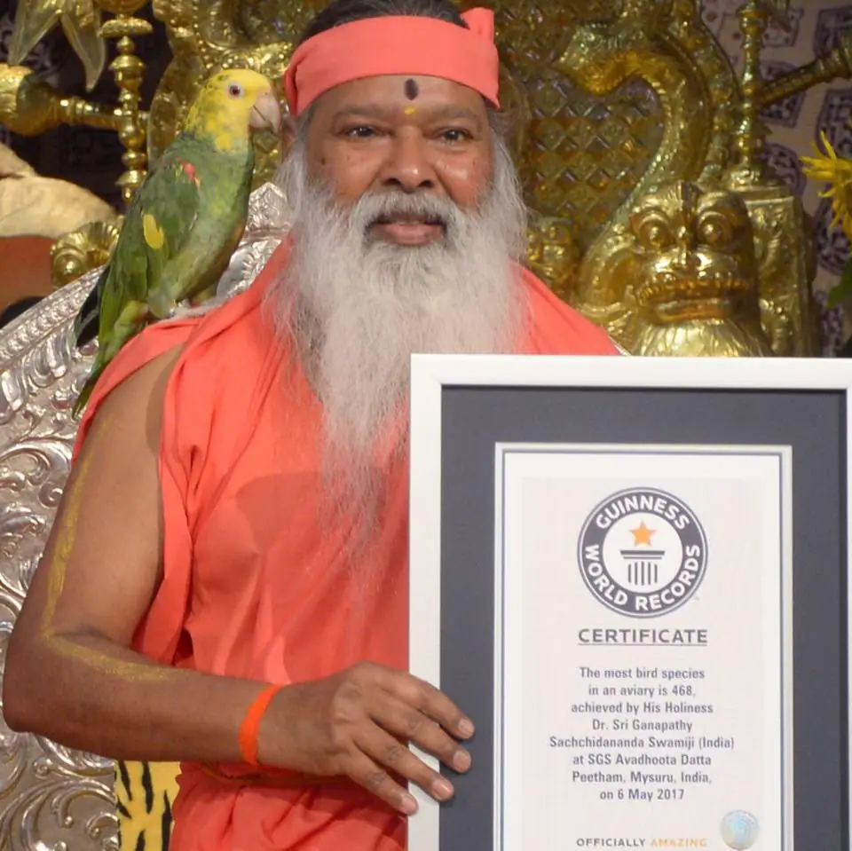
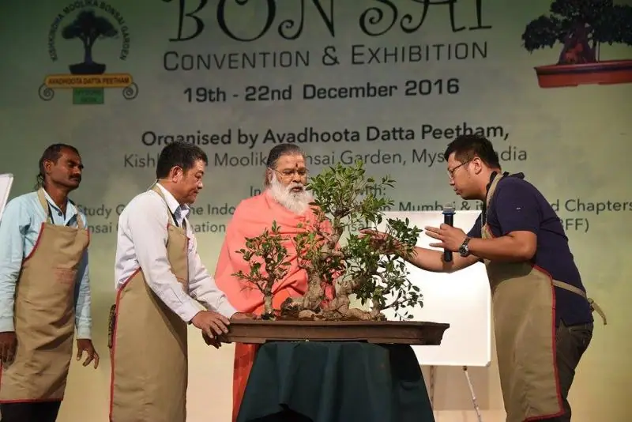
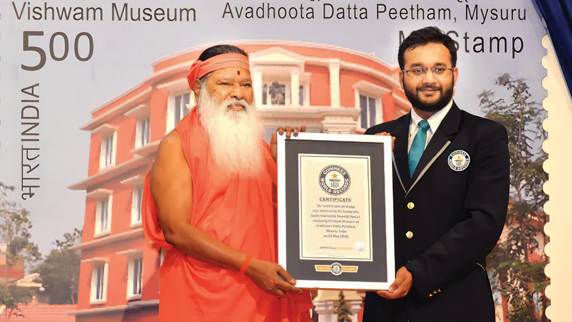

A sanctuary for rescued birds, a garden of miniature trees, a museum of the world’s treasures and a hall built for healing music: four landmarks within Sri Ganapathy Sachchidananda Ashram.
Within the Ashram
A tour in four chapters
Each landmark carries a part of Sri Swamiji’s mission: compassion for birds, reverence for trees, the world’s cultures gathered in one place, and music as a means of healing and meditation.
A free-flight, walk-in aviary with its own bird hospital, founded by Sri Swamiji in 2012 and named in honour of Sage Shuka for his contributions in imparting righteous values to humanity.
Founded 2012Sri Swamiji at Shuka VanaHe personally feeds, cajoles and nurtures the birds
A sanctuary for birds
Shelter for birds that were abused, injured or abandoned
Shuka Vana houses hundreds of colourful, exotic species of parrots, including many critically endangered and endangered species. His Holiness Sri Sri Sri Ganapathy Sachchidananda Swamiji has taken a serious resolve to rehabilitate injured birds, and Shuka Vana compassionately gives shelter to neglected and abandoned birds.
It provides a restored natural habitat in which endangered and critically endangered species can thrive and reproduce. The aviary’s healthy, safe and clean environment is instrumental in their protection and conservation, and the enclosure spans an entire acre within the Ashram grounds.
Visitors can watch rare parrot species flying freely. The Peetham describes the aviary as a place to be in the presence of the deity that presides over one’s own zodiac sign, and of a parrot that represents one’s planet and birth date.
Sri Swamiji believes that birds play a crucial role in the survival of other species. With bird populations declining in recent years, Shuka Vana aims to educate and sensitise the public, and to foster respect and kindness towards birds.

Guinness World Records · 6 May 2017
Most bird species in an aviary
Awarded at SGS Avadhoota Datta Peetham, Mysuru, for housing the most parrot species in a single aviary. The certificate records 468 species; the Peetham’s Shuka Vana pages give 486.
Year of the Bird · 2018
Part of a worldwide campaign
Shuka Vana was invited to take part in the “Year of the Bird 2018” project, led by Audubon, BirdLife International, the Cornell Lab of Ornithology and National Geographic with 190 other organisations, to protect birds and their habitats.
How the birds are cared for
The units that care for the birds
The parrots are arranged according to their nativity and behaviour inside a well-protected, two-layered meshed aviary, planted with selected plants and trees, with food stations, water pots and nest boxes.
Rehabilitation centre
Niri Vana
Shelter for injured and handicapped birds and birds with mental illness, including physically challenged birds that were not receiving proper care with their owners.
Avian care unit
Pari Vana
Diagnostics and treatment for the birds, supported by laboratories and a radiology unit.
Inside the labs
Molecular biology lab
PCR (Polymerase Chain Reaction) for gender determination and to detect viral and bacterial diseases, with an airfuge, water bath, vortex mixer, electrophoresis unit and gel documentation unit.
Bio-safety cabinet, incubator, autoclave and binocular microscope.
Bird health care unit
Sanjeevini Vana
When a bird is diagnosed with an illness or disease, it is isolated and shifted here, where it is given treatment.
Food unit
Phala Shala
Fruits and vegetables are cleaned and cut and grains are sprouted, then weighed and dispatched for the birds.
Swipe for more
Phala Shala · the diet
Four meals a day
A nutritious, hygienic and balanced diet, along with a special hand-feeding formula. Food and water quality checks are done routinely in the lab.
Fruits
Apple
Papaya
Musk melon
Kiwi
Mango
Banana
Pomegranate
Oranges
Vegetables
Carrot
Beetroot
Drumstick
Pumpkin
Lady’s finger
Capsicum
Sprouts
Green gram
Chana
Green peas
Horse gram
Nuts, seeds & millets
Almonds
Walnut
Hazelnut
Pine nuts
Seeds
Millets
The care team
The people behind the care
70
caretakers (approx.)
2
resident vets
45
days between individual check-ups
Parrots do not show symptoms of illness, so each bird is individually examined once every 45 days. The medicines used are avian-specific.
Two resident veterinarians
Biochemistry and genetic technologists
Trained avian medical care givers
Caretakers
Volunteers
Cleaners
Conservation
Protecting parrots that are endangered in the wild
Conservation of various species, especially endangered and critically endangered birds, is undertaken at Shuka Vana.
Blue-throated macaw
Bolivian military macaw
Lesser sulphur-crested cockatoo
Superb parrot
Sun conure
The largest parrot in the worldHyacinth macaw
The smallest parrot in the worldGoldie’s lorikeet
Both are part of Shuka Vana’s family, as the Peetham describes them.
10Every year
The Top 10 Birds
To build awareness of these feathered friends, ten parrot species at Shuka Vana that are in the endangered zone in the wild are selected every year. The results of the Top 10 Birds list are based on voting by thousands of Shuka Vana members from across the globe.
Apart from the care and compassion showered on them, Sri Swamiji personally feeds the birds, cajoles them and nurtures them with love and affection, and the birds in turn show immense love and longing for him. Some of the birds chant the divine names of God.
Meet Varam, the Double Yellow-headed Amazon from Shuka Vana, who chants the first line of the Hanuman Chalisa with devotion and engages in charming conversation.
Varam the parrot chants the first line of the Hanuman Chalisa
Video plays from YouTube when you press play.
From the aviary
Visiting Shuka Vana
Temporarily closed for maintenance
The Peetham’s Shuka Vana page states: “Shuka Vana is temporarily closed for public due to Maintenance Works.” The hours listed on that page also differ from the standard Shuka Vana hours shown elsewhere on this site. Please check before visiting.
Live status · this site’s standard hoursChecking…
Standard hours used across this site: Morning 9:00 AM – 12:00 PM, Evening 3:30 PM – 6:00 PM. Closed on Wednesdays. The live status does not reflect the maintenance closure.
02Chapter 2: A garden of miniature trees · since 2005
Kishkindha Moolika Bonsai Garden
An exquisite collection of more than 450 carefully shaped miniaturised trees, displayed in an oriental garden setting and passionately developed and nurtured by Sri Swamiji himself.
450+
miniaturised trees in the garden
2005
year the garden was inaugurated
10,836
trees in the 2025 Guinness World Records display
257
species in that display
Sri Swamiji performs Prakruti Puja (Puja to Mother Nature) in the Bonsai Garden
A spiritual garden
Wonders of Mother Nature, in miniature
The trees are displayed in the tranquil surroundings of Sri Ganapathy Sachchidananda Ashram. A keen nature lover, Sri Swamiji has a special interest in developing spiritual gardens that enlighten people about the divinity of Mother Nature, and the Ashram owes its lush look to his enduring attention to detail and the dedicated volunteer garden staff.
The towering sculpture of Moolikeswara, the presiding deity of herbal healing, who frees addicts from their addictions, adorns the garden.
Every tree in the Bonsai Garden has a history behind it. Sri Swamiji goes to each tree and listens to its raga, or the sounds it makes, and has brought many trees from different countries; from Calcutta came a bonsai Neem tree.
Gardens within the garden
Navagraha GardenThe nine planets
Sapta Rishi GardenThe seven sages
Nakshatra GardenThe stars
Rashi GardenThe zodiac signs
These gardens stand testimony to Sri Swamiji’s zeal for evolving new ways of adoring and worshipping nature.
Every tree has a history
Three stories the garden keeps
i
Madhuvana, in the Ramayana
Kishkindha Moolika Vana, then called Madhuvana, was safeguarded by Dadhimukha, uncle of the monkey king Sugreeva. When news came that Sita had been found, the jubilant Vanaras destroyed his garden of short fruit trees, snuggled between two hills. The Peetham holds that India has had the bonsai tradition since the Treta Yuga.
ii
The leaf that saved a child
As a child, Sri Swamiji swallowed nine pellets of rat poison smeared with honey. His father Narasimha Sastry, a physician, sent for a leaf from a forest tree, and its juice saved the boy’s life. Years later his father told him of kubja (midget) trees grown in small pots for medicine; at about thirty, Sri Swamiji’s interest in bonsai was rekindled.
iii
Sri Jayalakshmi Mata’s tree
The year Sri Swamiji was born, his mother planted a tree in the precincts of the Sangameswara Siva temple at Mekedatu. Entwined by snakes, the Naga devatas, it grew twisted. Devotees found it during the temple’s renovation and brought it to the Bonsai Garden, where it can be seen today.
Swipe for more

International Bonsai ConventionSri Swamiji looks at a bonsai creation
Conventions & records
Gathering the world’s bonsai lovers
Sri Swamiji organises Bonsai Conventions that bring together enthusiasts, professional tree experts and hobbyists from different countries to share their expertise, their love for the art and their commitment to preserving nature. Techniques for different aesthetic styles, and methods for preserving tree species, are explained and explored.
He urges every child and adult to adopt not one tree but several, and, where space is limited, to learn bonsai techniques to safeguard tree species at least in miniature form. Sri Swamiji has also written a book on growing bonsai at home.
Guinness World Records · 21 Dec 2016
Largest display of bonsai trees
2,649 trees at the World Bonsai Convention in the Mysuru Ashram.
Guinness World Records · 14 Jun 2025
The largest display of bonsai trees
10,836 trees across 257 species, as part of the Vruksha Shanti Pooja at Avadhoota Datta Peetham, Mysuru.
From the garden
Visiting the garden
Timings for public visit
Morning
10:00 AM – 12:30 PM
Evening
3:30 PM – 5:30 PM
Holiday
Every Wednesday
As listed on the Peetham’s Bonsai Garden page.
Timings vary across official sources; please check with the Ashram before visiting.
03Chapter 3: A museum of the universe · since 2006
Vishwam Museum
“Vishwam” translates to “Universe”: exhibits from around the world, many of them rare gifts received by Sri Swamiji from devotees and admirers, gathered to convey a message of universal love.
2006
year the museum was established
1835
earliest stamps in Sri Swamiji’s collection
162
countries in the stamp collection
40+
countries the musical instruments come from
Vishwam Museum, Avadhoota Datta Peetham
Seven worlds and two collections
A journey through different realms
Upon entering Vishwam, visitors are guided through several worlds, each with its own theme and significance.
Ganapathy World
Representations and artefacts of Lord Ganapathy, showing the deity’s significance across traditions.
World of Antiques
A treasure trove of rare and valuable historical artefacts.
World of Crystals and Minerals
Natural crystals and minerals: the geological wonders of the globe.
World of Cultures of Historical Significance
Exhibits from many cultures and the rich tapestry of human civilisation.
World of Spirituality
Items of deep religious and philosophical significance from humanity’s spiritual heritage.
World of Sri Swamiji’s Paraphernalia
Personal items and memorabilia, offering insights into Sri Swamiji’s life and teachings.
World of Wonders
Extraordinary and unique items that defy conventional categories.
Collection of Stamps and Coins
Sri Swamiji’s stamp collection and coins tracing India’s monetary history.
Music Instruments Section
Instruments from over forty countries: string, plucking, wind, percussion and more.
Treasures to look for
From Alexander’s silver to dinosaur eggs
Minerals, gemstones, crystals, carpets, paintings and etchings fill the corridors. A few of the highlights the Peetham names:
A silver drachm bearing the name of Alexander the Great (336–323 BC)
An ancient ship sculpted from Chinese jade stone
An amethyst geode from North Canada
A Ganapathi idol carved from stone sourced from Uzbekistan and crafted in Lahore, Pakistan
The Kalinga Mardana, a bronze cast in a single pour, gifted by former President of India Dr. R. Venkataraman
Rare Brahma stamps from the French colonial era in India
The Surya Varna, carved on petrified wood
The Vishwaroopa, carved from a single tree trunk
Fossilised dinosaur eggs

World’s largest special stampDepicting the Vishwam Museum, 26 May 2018
Stamps and coins
A collection that began at a post office
Sri Swamiji’s stamp collection carries a personal link to his Poorvashrama days, when, known as Satyanarayana, he worked at a post office in Metagalli, Mysuru, in the 1960s. Curated under philately, it offers thematic insights into animals, flowers, musical instruments, the art of India and temple architecture, with stamps from 162 countries and golden replicas of iconic stamps from the USA and India.
The coin collection traces India’s monetary history: regular coins of the Republic of India, relics from British India, post-Independence coinage and Indian commemorative coins.
Guinness World Records · 26 May 2018
World’s largest special stamp
2.87 m² (30.9 sq ft), depicting the Vishwam Museum, released on the occasion of Sri Swamiji’s 76th birthday celebrations.
The Music Instruments Section
Instruments from over forty countries
Many of them were gifted to Sri Swamiji during his travels across India and abroad, arranged as string, plucking, wind and percussion instruments, and more. Among the countries represented:
India
China
Tibet
Japan
Australia
Indonesia
Persia
Turkey
Uganda
Bhutan
Ethiopia
Mexico
Peru
Germany
Norway
Switzerland
and many more
From the museum
Visiting the museum
The Peetham’s Vishwam Museum page does not list visiting hours. Please confirm with the Ashram before you go.
A purpose-built auditorium, also known as the Raga Ragini Samudaya Bhavan, inaugurated by Sri Swamiji on 31 May 1998. Thousands of concerts have been held here since.
1998
inaugurated on 31 May
35,000
square feet
5,000+
seats, in a staggered layout
2,150
square feet of stage
Nada Mantapa’s stage
Portraits of the composersA unique lighting system highlights the composer being performed
A sanctuary of music
Where music is offered for healing and meditation
Nada Mantapa is equipped with state-of-the-art sound, lighting and theatrical systems. It stands as a testament to Sri Swamiji’s dedication to the healing and meditative powers of music: a venue for world-class performances, and a sanctuary where the transformative power of music can be experienced in its purest form.
Sri Swamiji frequently performs “Music for Meditation and Healing” here. During the 10th anniversary celebrations of Nada Mantapa on 29 May 2008, his handling of Raga Veenavadini captivated the audience.
Large portraits of renowned composers adorn the walls. When Saint Tyagaraja’s “Samaja Varagamana” is played or sung, the lights in front of Tyagaraja’s portrait illuminate automatically.
Sapta Swara Devata Mantapam
Seven notes, seven deities
Nada Mantapa houses the world’s first and only Sapta Swara Devata Mantapam, with deities symbolising the seven musical notes.
SaAgni
RiBrahma
GaSaraswati
MaParameshwara
PaMaha Vishnu
DaMaha Ganapati
NiSurya Narayana
Illustration, not to scale, drawn after the hall’s fan shape. Its seats radiate within 140° of the performer.
22
colossal tamburas, for the 22 shrutis (microtones) of the Sangeeta Shastra
72
pillars, for the 72 melakarta ragas
140°
degrees: the seats radiate from the performer, with clear visibility from every seat
Origin of Nada Mantapa
Shaped like a palm-leaf fan
The fan-shaped design was inspired by a Ramayana episode narrated by Sri Swamiji. Lord Rama, seeking Seetha in the forest, was fanned by Hanuman with a palm leaf, demonstrating both strength and artistic sense. The auditorium is centrally located within the Ashram, with its entrance facing east toward the sacred Chamundi hills.
At the entrance, visitors are greeted by sculpted deities associated with music, and the porch is adorned with vibrant decorations in the Tamil Nadu style.
13.104 m² (140.92 ft²), depicting Nada Mantapa, a partially covered performance centre within the Ashram premises.
Guinness World Records · 12–13 Dec 2024
Longest chanting marathon (team)
An Ahoraatra Akhanda (day-and-night) Hanuman Chalisa Parayana lasting 33 hours, 33 minutes and 33 seconds, held at Nada Mantapa in the presence of Sri Swamiji.
From the hall
Attending a programme
Concerts, festival celebrations and Sri Swamiji’s Music for Meditation and Healing sessions are held in Nada Mantapa through the year. The Nada Mantapa page lists no separate visiting hours; see the Peetham’s calendar for upcoming programmes.
Shrines to Lord Dattatreya, Sri Raja Rajeshwari, Sri Datta Venkateshwara and more. General darshan 6:00 AM – 12:00 PM and 4:00 PM – 8:00 PM; individual temples keep their own hours, listed on the darshan page.
The 70-foot monolithic statue consecrated by Sri Swamiji in 2012. On Saturdays and Sundays a short laser show is projected onto it at 7:10, 7:40 and 8:10 PM.
Accredited as a “Yoga Training Center” by the Yoga Certification Board, Ministry of AYUSH, Government of India. Find it on the 2nd floor of the SGS Ayurvedic Hospital.
Explore Datta Kriya Yoga
Plan your visit to the Ashram
How to reach Mysuru, darshan timings, guidelines for visitors and places to stay, all in one place.